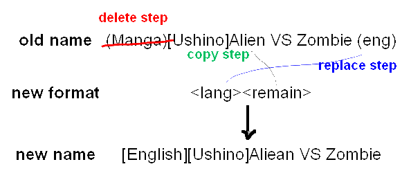

Do you watch your downloads gradually increase in number, but their file names are all in different formats. You may occasionally spend some time renaming them, but not only does it take a long time, it always feel like a waste of time. This renamer is designed to cut your organizing time.
The aim of this software is to unify the folders and archive file names. It's not for batch renaming a group of images.
It is written
in C#, so .Net framework is required. It comes with English/Chinese/Japnese interfaces.
Download UniformRenamer
The rename process consists of a series of steps. There are 3 types of steps:
In the upper half of the window you can edit the step table. The lower half is the filename preview area, where you can select files to rename.
Here is a simple example:

A delete step deletes text from the old file name, which helps to remove unwanted information. This will make other steps easier. Please enter the match patterns in the last column. Multiple terms need to be tab-separated.
A copy step copies text from the old file name to the new file name. Please enter the match patterns in the last column for those words (terms should also be tab separated), and specify the destination tag in the third column (such as <volumn_number>). If there are a number of matches, only the first match will be copied into the new file name.
A replace step searches in the old file name for some match, and if one is found, a replacement text will be inserted into the new file name. For example, if the old file name to find the words 'English', the program can automatically place '[EN]' in the new file name. Please enter the match patterns in the last column, the replacement text in the fourth column, and the destination tag in the third column.
The checkboxes on the left allows users to temporarily disable some of the steps. Right-clicking on the rows shows options to remove a step.
The match terms column (last column) allows the user to enter multiple search terms, separated by tabs. You can enter ordination text or regular expressions. For example: (\(C\d(2)\)) is able to match text from (C00) to (C99), which is useful for organizing doujinshi. Regular expressions requires a '* ' prefix (star followed by a space). Regular expression is very powerful, and to understand it fully please refer to the relevant books or Internet resources.
The copy step with the regular expression "* .*" is useful, because it can copy the remaining text from the old file name to the new file name. Some information in the file names are not easy to treat (such as title and author names), so by removing unnecessary text you can get the desired leftover text.
This application is using regular expression engine from Microsoft .NET framework, therefore it only recognise that version of regular expression syntax.